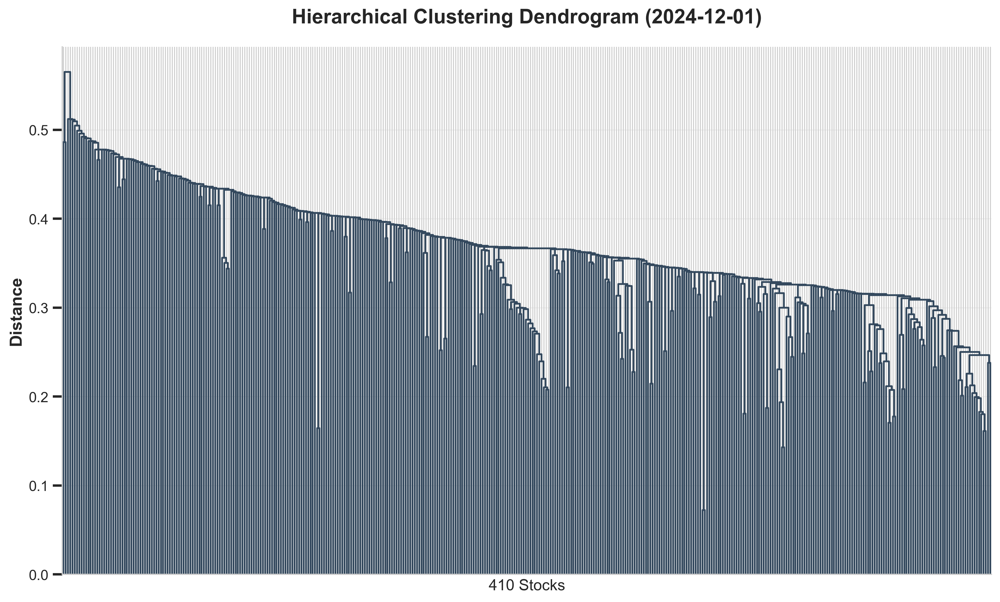
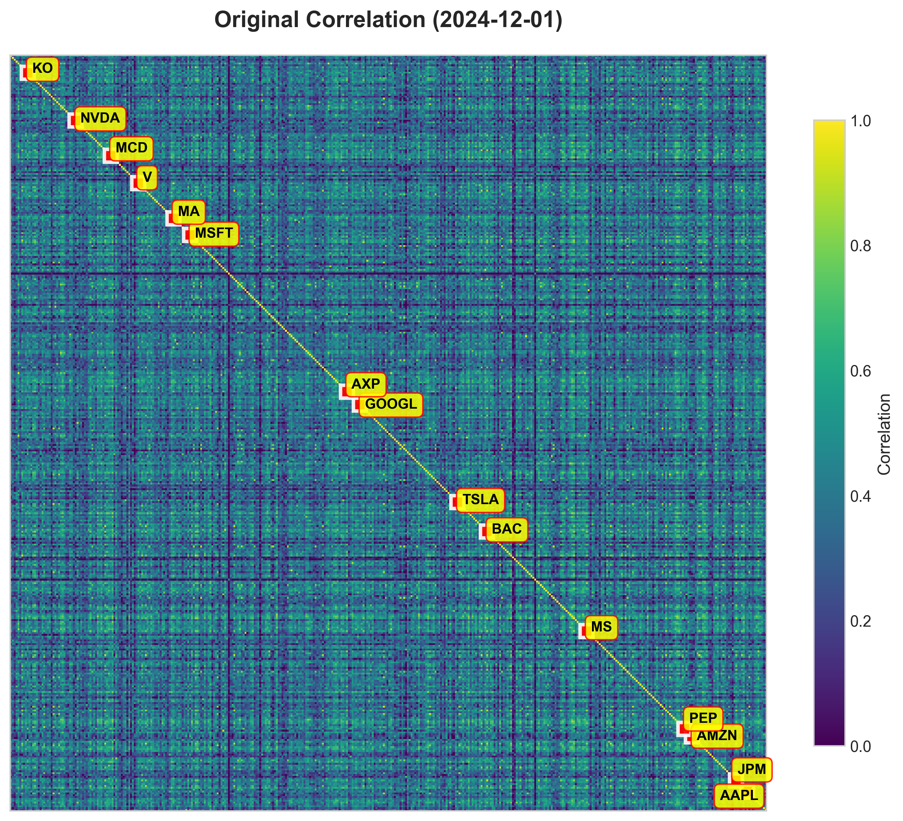
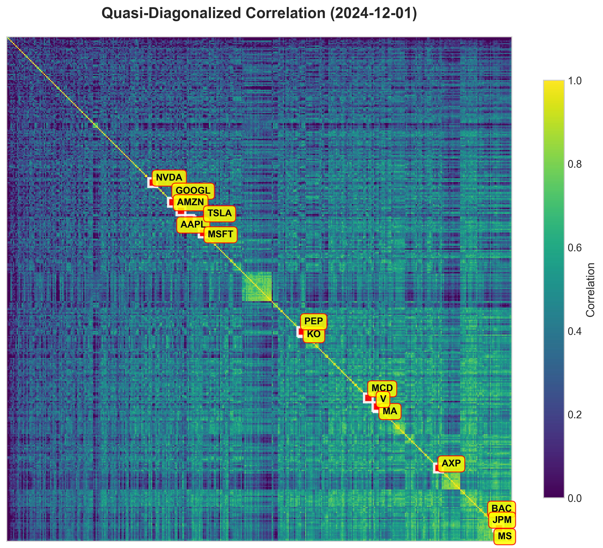
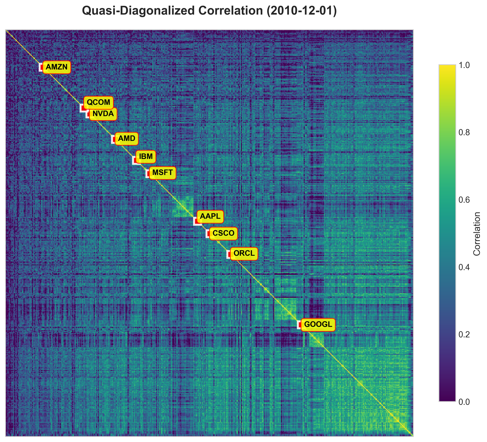
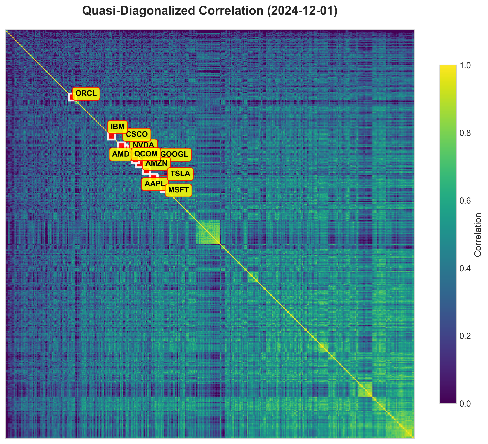

Hierarchical Risk Parity Across U.S. and Chinese Equities
Problem Setup
Traditional portfolio optimization — mean-variance, minimum variance, equal risk contribution (ERC) — relies on inverting a covariance matrix. In high-dimensional equity universes (N ≈ 500), the sample covariance matrix is near-singular and highly unstable, producing extreme weight allocations and poor out-of-sample performance even after shrinkage corrections.
Hierarchical Risk Parity (López de Prado, 2016) takes a fundamentally different approach: instead of inverting a covariance matrix, it uses hierarchical clustering to uncover the natural correlation structure among assets, then allocates risk recursively across clusters. No matrix inversion is required.
This project replicates the HRP methodology on the S&P 500 (1996–2024) and extends it to China’s CSI 300 (2012–2025) — testing whether hierarchical risk allocation retains its advantages in a less mature, higher-volatility emerging market. HRP is benchmarked against inverse volatility (IV) and three ERC variants using sample covariance, Ledoit–Wolf shrinkage, and PCA-based estimation.
📄 Full paper (PDF)Dataset
S&P 500: Monthly total returns from CRSP (survivorship-bias-free), SPY ETF included as market reference. Constituency file used at each monthly rebalance date to ensure only eligible index members are included. Full sample spans 1991–2024 (252,164 stock-month observations); backtest begins 1996 after applying a minimum 60-month lookback filter (≥36 valid observations required).
CSI 300: Monthly returns from WIND database (2007–2025), CSI 300 constituency file. Equal-weighted CSI 300 index included as market reference. Missing data imputed with cross-sectional mean of each period.
Methodology
HRP is implemented in three steps. All competing strategies share the same rebalancing schedule and eligibility filters.
Hierarchical Correlation Structure
The figures below illustrate how quasi-diagonalization transforms the correlation matrix into a tractable block structure, and how this structure has evolved over time — particularly in the technology sector.





Results — S&P 500 (1996–2024)
Among the five risk parity strategies, HRP delivers the most compelling risk profile: the highest Sharpe ratio (0.87) and shallowest maximum drawdown (−43.7%), despite a lower raw return than IV and ERC. All five strategies also outperform SPY on a risk-adjusted basis. Inverse Volatility offers the highest return (12.5%) with minimal turnover (1.1%), making it a strong practical alternative.
Notably, the three ERC variants using different covariance estimators (sample, Ledoit–Wolf, PCA) produce near-identical results (Sharpe 0.83–0.84). This suggests that the equal risk contribution principle itself drives the improvement, not the specific estimation technique.
| Strategy | Ann. Return | Ann. Vol. | Sharpe | Sortino | Max DD | Turnover | Eff. Bets |
|---|---|---|---|---|---|---|---|
| Inverse Volatility | 12.5% | 15.3% | 0.82 | 1.11 | −48.7% | 1.1% | 360 |
| ERC + Sample Cov. | 12.3% | 14.6% | 0.84 | 1.13 | −47.9% | 11.2% | 278 |
| ERC + Ledoit–Wolf | 12.4% | 14.7% | 0.84 | 1.13 | −48.7% | 10.3% | 284 |
| ERC + PCA | 12.2% | 14.6% | 0.83 | 1.13 | −48.0% | 10.3% | 279 |
| HRP | 11.8% | 13.5% | 0.87 | 1.17 | −43.7% | 13.5% | 222 |
| SPY (Benchmark) | 10.9% | 15.3% | 0.71 | 0.99 | −50.8% | — | — |
.png)

.png)
Results — CSI 300 (2012–2025)
In the Chinese market, HRP dominates across all dimensions simultaneously — a result uncommon for pure risk strategies. It achieves the highest annualised return (10.4%), the lowest volatility (19.5%), the best risk-adjusted ratios (Sharpe 0.53, Sortino 0.82), and the shallowest drawdown (−37.3%).
This raw return outperformance likely reflects China’s structural inefficiencies: HRP’s ability to identify mispriced correlation structures and avoid crowded trades provides alpha generation opportunities beyond mere risk management. The performance gap widens during the 2015 equity bubble burst and the 2018 trade war selloff.
| Strategy | Ann. Return | Ann. Vol. | Sharpe | Sortino | Max DD | Turnover | Eff. Bets |
|---|---|---|---|---|---|---|---|
| Inverse Volatility | 9.5% | 20.9% | 0.46 | 0.73 | −38.9% | 1.9% | 247 |
| ERC + Sample Cov. | 9.5% | 20.9% | 0.45 | 0.73 | −38.4% | 7.9% | 214 |
| ERC + Ledoit–Wolf | 9.3% | 20.8% | 0.45 | 0.72 | −39.1% | 6.7% | 225 |
| ERC + PCA | 8.8% | 20.5% | 0.43 | 0.67 | −38.3% | 8.7% | 211 |
| HRP | 10.4% | 19.5% | 0.53 | 0.82 | −37.3% | 12.9% | 155 |
| EW CSI 300 (Benchmark) | 7.8% | 22.3% | 0.35 | 0.56 | −45.8% | — | — |

.png)
Key Findings
- HRP achieves the best risk-adjusted performance in both markets. Highest Sharpe and Sortino ratios across all strategies: 0.87/1.17 in the S&P 500 and 0.53/0.82 in the CSI 300. In China, HRP uniquely dominates in raw returns as well (10.4% vs. 9.5% for Inverse Volatility and 7.8% equal-weighted index), which is unusual for a pure risk-based allocation strategy.
- The concentration paradox. HRP achieves better effective diversification with fewer positions: 222 effective bets (S&P 500) vs. 360 for Inverse Volatility. This illustrates that effective diversification requires selecting truly independent risk sources, not merely maximising asset count. Ten highly correlated tech stocks contribute less diversification than one representative per distinct sector cluster.
- Covariance estimation method has minimal impact on ERC performance. Sample covariance, Ledoit–Wolf shrinkage, and PCA ERC variants produce near-identical Sharpe ratios (0.83–0.84). The equal risk contribution principle itself drives the improvement over naive benchmarks, not the choice of estimator.
- HRP provides superior downside protection during stress regimes. Max drawdown −43.7% vs. SPY −50.8% during the 2008 financial crisis. When correlations spike across the market, HRP’s hierarchical structure prevents over-allocation to synchronized clusters that correlation-blind methods fail to distinguish.
- Tech sector clustering has tightened markedly since 2010. The quasi-diagonalized correlation matrix for technology stocks in December 2024 shows substantially tighter within-cluster correlations compared to 2010 — consistent with AI-theme concentration compressing individual stock fundamentals into a single sector-wide factor.